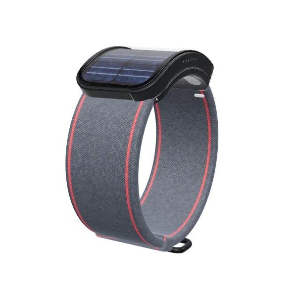

Pilih Simpan Gambar di menu yang muncul. Foto langsung masuk ke galeri.
Arahkan kamera ke pergelangan tangan, punggung tangan menghadap kamera.

Coba di pergelangan · Performance Edition
Gelang muncul otomatis begitu kamera menemukan pergelangan tangan Anda.
Video diproses langsung di perangkat Anda dan tidak dikirim ke server.
Pilih Simpan Gambar di menu yang muncul. Foto langsung masuk ke galeri.